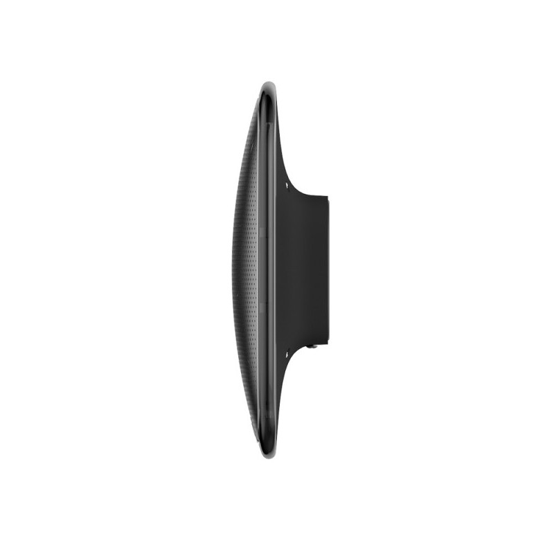
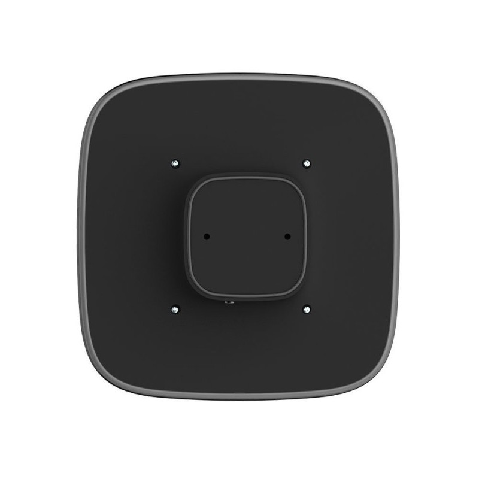

Зовнішня сирена Ajax StreetSiren Black Jeweller



❮
❯
Бездротова зовнішня сирена Ajax StreetSiren Black призначена для звукового та візуального оповіщення про тривогу на вулиці. Гучність сигналу 113 дБ чути на відстані до 600 метрів у відкритому просторі. Яскраве LED-підсвічування привертає увагу сусідів та перехожих, відлякує зловмисників. Працює по бездротовій технології Jeweller з дальністю зв'язку до 1700 метрів. Захист IP54 забезпечує роботу під дощем та снігом. Автономна робота до 5 років від 4 батарей CR123A. Захист від саботажу: тампер проти зняття, система антимаскування, виявлення втрати зв'язку. Регульована гучність та тривалість сигналу через застосунок Ajax. Два режими світлодіодів: спалахи або постійне світіння. Миттєва активація при тривозі. Простий монтаж на кріпильну панель SmartBracket. Сучасний дизайн чорного кольору.
Основні характеристики:
Основні характеристики:
- Зовнішня бездротова сирена для звукового та світлового оповіщення
- Гучність сигналу: 113 дБ (чути до 600 м у відкритому просторі)
- Яскраве LED-підсвічування (спалахи або постійне світіння)
- Технологія зв'язку: Jeweller (дальність до 1700 м)
- Захист: IP54 (від пилу та бризок води)
- Автономна робота: до 5 років від 4 × CR123A
- Регульована гучність та тривалість сигналу
- Два режими LED: спалахи або постійне світіння
- Захист від саботажу: тампер, антимаскування
- Миттєва активація при тривозі
- Налаштування через застосунок Ajax
- Температурний діапазон: -25°C до +50°C
- Кріпильна панель SmartBracket у комплекті
- Колір: білий
- Рівень звуку: 113 дБ на відстані 1 метр
- Чути на відстані до 600 метрів у відкритому просторі
- Порівняння: 113 дБ — як гучність працюючої бензопили або відбійного молотка
- Достатньо гучно для привернення уваги сусідів
- Відлякує зловмисників потужним звуковим сигналом
- Регульована гучність через застосунок Ajax (тихіше або голосніше)
- Ефективно працює навіть у шумному міському середовищі
- Яскраві світлодіоди червоного кольору
- Два режими роботи: спалахи або постійне світіння
- Режим спалахів: мигає під час тривоги (привертає більше уваги)
- Режим постійного світіння: світить безперервно під час тривоги
- Налаштування режиму через застосунок Ajax
- Видно здалеку вночі та в темний час доби
- Додатково відлякує зловмисників
- Допомагає сусідам та перехожим звернути увагу на подію
- Пропрієтарна бездротова технологія Ajax
- Дальність зв'язку: до 1700 м (між сиреною і хабом за відсутності перешкод)
- Двосторонній зв'язок з хабом
- Блокове шифрування з плаваючим ключем
- Передовий захист від саботажу
- Миттєва передача команд активації
- Дистанційне налаштування через застосунок Ajax
- Радіочастотний гопінг для запобігання глушінню
- Діапазони радіочастот: 866-926.5 МГц (залежно від регіону)
- Максимальна потужність: до 20 мВт (автоматичне регулювання)
- Модуляція: GFSK
- Гучність: налаштовується в діапазоні від тихого до максимального (113 дБ)
- Тривалість сигналу: від кількох секунд до кількох хвилин
- Налаштування через застосунок Ajax без зняття сирени
- Можливість вибрати оптимальну гучність для вашої ситуації
- Уникнення надмірного шумового забруднення
- Економія батареї при коротшій тривалості
- Індивідуальне налаштування для різних типів тривог
- Спрацювання одразу після отримання команди від хабу
- Затримка активації менше 1 секунди
- Синхронізована робота з іншими сиренами Ajax
- Одночасне спрацювання звуку та світла
- Надійна робота навіть при поганій погоді
- Тестування через застосунок в один клік
- Захист від пилу (рівень 5) — пило-захищений
- Захист від води (рівень 4) — бризки води з будь-якого напрямку
- Працює під дощем та снігом
- Стійкість до бруду та пилу
- Не боїться вологості та конденсату
- Працює в температурному діапазоні -25°C до +50°C
- Міцний пластиковий корпус
- Тривалий термін служби на вулиці
- Живлення: 4 батареї CR123A (попередньо встановлені)
- Розрахунковий термін роботи: до 5 років
- Найдовший термін роботи серед зовнішніх сирен Ajax
- Економне споживання енергії в режимі очікування
- Сповіщення про низький заряд батареї завчасно
- Легка заміна батарей без демонтажу сирени
- Моніторинг заряду батарей через застосунок Ajax
- Тампер проти зняття — сповіщення при спробі зняти сирену з поверхні або з кріпильної панелі
- Система антимаскування — виявляє спроби заблокувати динамік або світлодіоди
- Виявлення втрати зв'язку від 36 секунд
- Захист від радіозавад через радіочастотний гопінг
- Захищений корпус — важко пошкодити або відключити
- Сповіщення про низький заряд батареї
- Миттєві push-сповіщення про спроби саботажу
- Спрацювання датчиків руху — сирена включається при виявленні вторгнення
- Відкриття дверей/вікон — активація при спробі проникнення
- Тривожна кнопка — включення сирени вручну при небезпеці
- Пожежні датчики — звуковий та світловий сигнал при виявленні диму/вогню
- Датчики протоки/затоплення — оповіщення про аварійну ситуацію
- Ручна активація через застосунок Ajax — тестування або відлякування
- Сценарії автоматизації — включення за розкладом або умовами
- Додавання сирени до системи за кілька кроків
- Регулювання гучності сигналу
- Налаштування тривалості звукового сигналу
- Вибір режиму LED: спалахи або постійне світіння
- Тестування сирени в один клік
- Перевірка рівня сигналу Jeweller
- Моніторинг заряду батарей
- Налаштування сценаріїв активації
- Перегляд історії спрацювань
- Віддалене керування без виїзду на об'єкт
- Оновлення прошивки онлайн
- Кріпильна панель SmartBracket у комплекті
- Швидкий монтаж без зняття кришки корпусу
- Фіксація сирени на панелі одним рухом
- Тампер автоматично активується при установці
- Можливість зняття тільки при роззброєнні системи
- Надійна фіксація — не спадає від вітру або вібрацій
- Естетичний зовнішній вигляд після монтажу
- Охорона приватних будинків — звукове та візуальне відлякування
- Дачі та котеджі — привернення уваги сусідів при тривозі
- Комерційні об'єкти — магазини, склади, офіси
- Виробничі приміщення та цеху
- Паркінги та гаражні кооперативи
- Господарські будівлі та ангари
- Будь-які об'єкти з потребою зовнішнього оповіщення
- Доповнення до внутрішньої сирени HomeSiren
- ✅ Потужний звук 113 дБ — чути до 600 м
- ✅ Яскраве LED-підсвічування (спалахи/постійне світіння)
- ✅ Бездротова технологія Jeweller до 1700 м
- ✅ До 5 років автономної роботи
- ✅ Регульована гучність та тривалість
- ✅ Два режими світлодіодів
- ✅ Захист IP54 — працює під дощем та снігом
- ✅ Захист від саботажу: тампер, антимаскування
- ✅ Миттєва активація при тривозі
- ✅ Налаштування через застосунок Ajax
- ✅ Простий монтаж на SmartBracket
- ✅ Температурний діапазон -25°C до +50°C
- ✅ Сучасний дизайн чорного кольору
- Встановлюйте на висоті 2-3 метри від землі
- Розміщуйте на видному місці для максимального ефекту відлякування
- Уникайте місць з прямим потраплянням струменів води
- Не встановлюйте під водостічними трубами
- Перевірте якість сигналу Jeweller перед остаточним монтажем
- Встановлюйте на стіні фасаду будинку для кращої чутності
- Рекомендується встановлення під дашком або козирком
- Проведіть тестування після встановлення
- Переконайтеся, що звук не заважає сусідам (регулюйте гучність)
- Відлякування зловмисників — гучний звук та яскраве світло змушують злочинців відступити
- Привернення уваги сусідів — при тривозі сусіди побачать/почують та зможуть викликати поліцію
- Пожежна тривога — звуковий сигнал попереджає про небезпеку вогню
- Затоплення — оповіщення про аварійну ситуацію
- Тривожна кнопка — відлякування при нападі або загрозі
- Тестування системи — перевірка працездатності охорони
- Автоматизація — включення за розкладом (наприклад, сигнал о певному часі)
- StreetSiren встановлюється зовні (vs HomeSiren всередині приміщення)
- StreetSiren має захист IP54 (vs HomeSiren без захисту від вологи)
- StreetSiren гучніша: 113 дБ (vs HomeSiren 105 дБ)
- StreetSiren має LED-підсвічування (vs HomeSiren тільки звук)
- StreetSiren до 5 років роботи (vs HomeSiren до 3 років)
- StreetSiren 4 батареї CR123A (vs HomeSiren 4 батареї AA)
- StreetSiren для відлякування та привернення уваги ззовні
- HomeSiren для оповіщення всередині приміщення
- Рекомендується використовувати обидві сирени разом для максимального ефекту
- Розміри: 163 × 123 × 55 мм
- Вага: 330 г (з батареями)
- Температурний діапазон: -25°C до +50°C
- Допустима вологість: до 95%
- Клас захисту: IP54
- Колір: білий
- Матеріал: міцний пластик
- Дизайн: сучасний, ненав'язливий
- Гучність сигналу: 113 дБ (на відстані 1 м)
- Дальність чутності: до 600 м (відкритий простір)
- LED-підсвічування: червоні світлодіоди
- Режими LED: спалахи або постійне світіння
- Технологія зв'язку: Jeweller
- Дальність зв'язку: до 1700 м
- Радіочастоти: 866-926.5 МГц (залежно від регіону)
- Максимальна потужність: до 20 мВт
- Живлення: 4 × CR123A (3 В)
- Термін роботи: до 5 років
- StreetSiren Jeweller
- Кріпильна панель SmartBracket
- 4 батареї CR123A (попередньо встановлені)
- Монтажний комплект
- Коротка інструкція
- Працює з усіма хабами Ajax (Hub, Hub 2, Hub Plus, Hub Hybrid)
- Підтримка ретрансляторів сигналу (ReX, ReX 2)
- Інтеграція з застосунками Ajax (iOS, Android, macOS, Windows)
- Підключення до пультів централізованого спостереження (ПЦС)
- Підтримка професійного режиму для інсталяторів (PRO)
- Сумісність з усіма пристроями Ajax
- Можливість використання кількох сирен на одному хабі
- Потужне звукове та візуальне оповіщення
- Відлякує зловмисників ще до проникнення
- Привертає увагу сусідів та перехожих
- Бездротова — легкий монтаж без проводів
- До 5 років автономної роботи
- Всепогодний захист IP54
- Гнучкі налаштування через застосунок
- Надійний захист від саботажу
- Сучасний дизайн чорного кольору
4350.00 грн